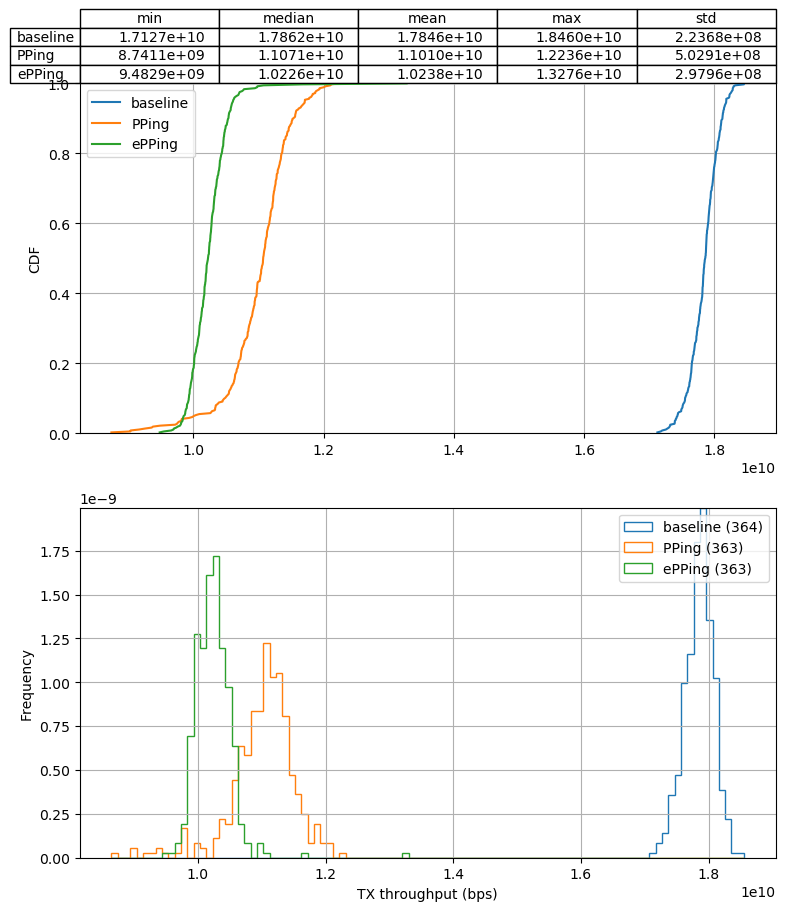
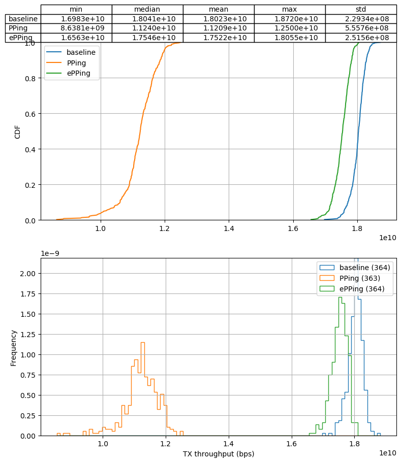

Progress update 2022-02-21
Simon Sundberg
Created: 2022-02-21 mån 13:53
1 PPing
- Prepared final PR
- Toke may still request changes
- Test with rate sampling
- Toke has fixed with conntrack, but have not had time to test it yet
- Can maybe run small test this week
2 Performance impact of rate sampling
- Original tests have been with no sampling to test raw performance and get "fair" comparison with PPing
- Not a realistic setup, produces massive amount of output
- Have done a quick test to see performance with the rate limit sampling
- Rate limit set to 1 RTT every 100ms (10 Hz) per flow
- Packets + (e)PPing pinned to single core
- At 1k flows, only get ~4500 events/s
- Much lower than theoretical 10 * 1000 = 10000
- Likely a combination of burstiness of transmission and missing replies
2.1 No rate sampling - 1 + 1000 flows


2.2 No sampling + no events - 1 + 1000 flows


2.3 Sampling (with events) - 1 + 1000 flows

2.4 Empty BPF programs, 1 + 1000 flows


3 Muhammad's observability paper
- Muhammad wanted some help with a paragraph on network flows
- Does it make sense with network flows as a "fourth pillar of observability" (others being logs, metrics and traces)
- More a "target" of monitoring (like disk, I/O, memory, CPU etc) than a type of monitoring?
- Don't think it's sensible to squeeze in ePPing here
4 Other
- As previously stated, will be very busy with courses
- Need to finish examination task for research ethics this week
- Invovles writing reserach plan and letter with information to participants (+reflections) on "your" reserach project
- Can maybe use scenario of deploying ePPing at ISP?
- Also need to prepare data set for statistics course (merge + CSV format)
- Need to finish examination task for research ethics this week